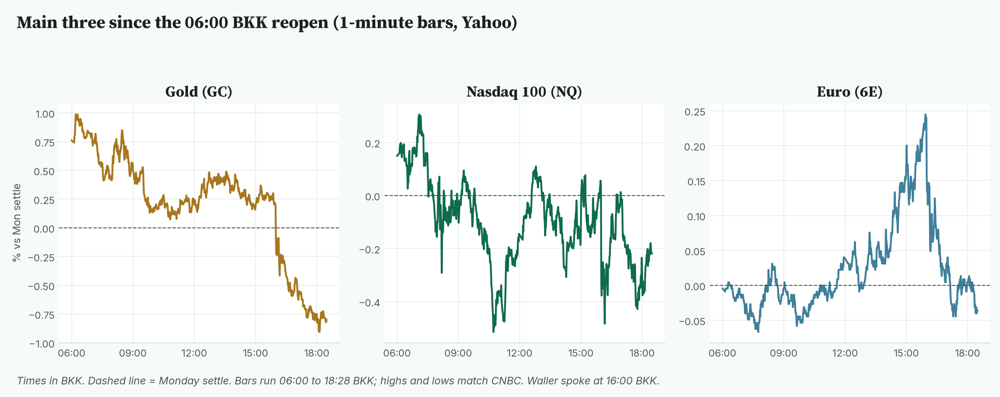
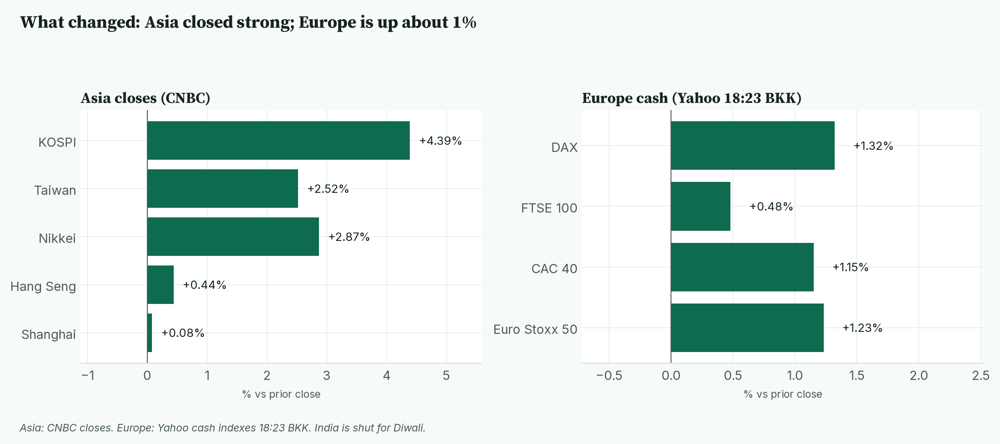
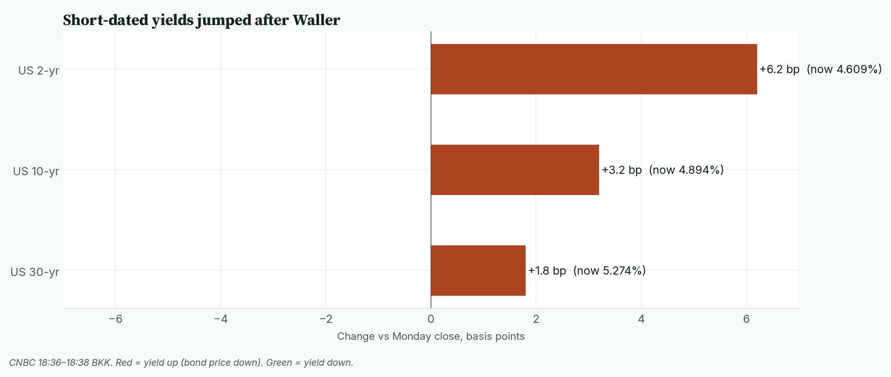
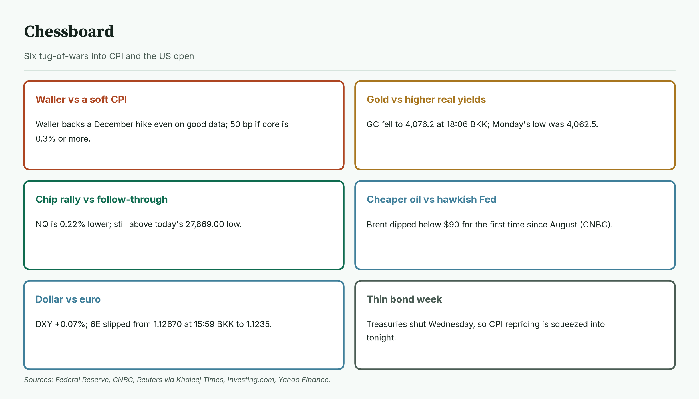
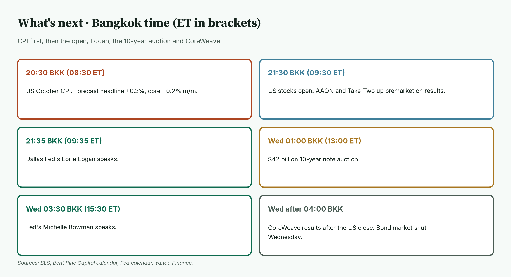
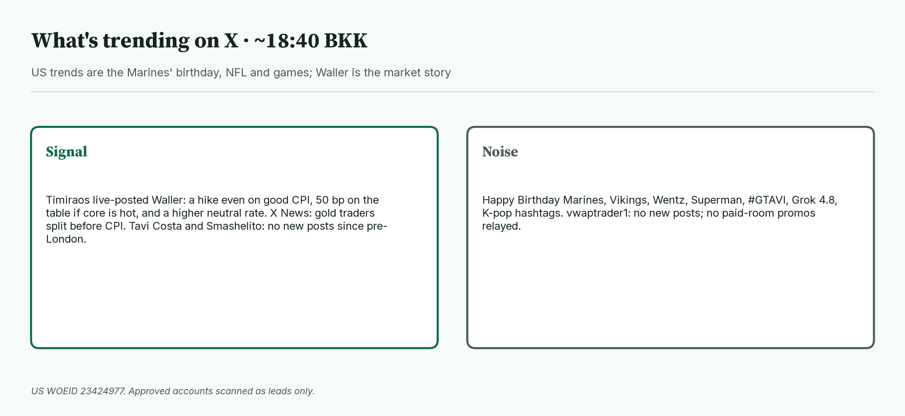

April · Market Intel, pre-NY · Tue Nov 10, 2026 · ~19:00 BKK / ~07:00 New York
Headline: Fed Governor Waller turned the morning hawkish. He backs a December hike even if CPI cools, and a half-point hike if core CPI is 0.3% or more. Gold futures fell to 4,081.3 (−0.81%). Nasdaq futures are 27,953.25 (−0.22%). Euro futures are 1.1235 (−0.04%). US October CPI at 20:30 BKK decides the session.
So what: since pre-London, the bar for a "good" CPI got higher. A forecast-matching print no longer stops a hike. Only a soft core print would ease pressure on gold and Nasdaq.
 Caption: Futures at 18:28 BKK and indicators at 18:36–18:38 BKK, versus Monday's settle or close. Gold is the big mover; stocks and the euro are close to flat.
Caption: Futures at 18:28 BKK and indicators at 18:36–18:38 BKK, versus Monday's settle or close. Gold is the big mover; stocks and the euro are close to flat.
1) Main instruments The three main contracts since the 06:00 BKK reopen, as a % move from Monday's settle. Gold slid after Waller spoke at 16:00 BKK. The euro gave back its afternoon gain. |
 Caption: The three main contracts since the 06:00 BKK reopen, as a % move from Monday's settle. Gold slid after Waller spoke at 16:00 BKK. The euro gave back its afternoon gain.
(Futures are contracts that trade nearly around the clock, so they show the mood before stock markets open. Quotes are from CNBC at 18:28 BKK (06:28 New York) and match the Yahoo Finance feed. Session highs and lows use 1-minute bars from the 06:00 BKK CME reopen (18:00 New York Monday) and match CNBC.)
Caption: The three main contracts since the 06:00 BKK reopen, as a % move from Monday's settle. Gold slid after Waller spoke at 16:00 BKK. The euro gave back its afternoon gain.
(Futures are contracts that trade nearly around the clock, so they show the mood before stock markets open. Quotes are from CNBC at 18:28 BKK (06:28 New York) and match the Yahoo Finance feed. Session highs and lows use 1-minute bars from the 06:00 BKK CME reopen (18:00 New York Monday) and match CNBC.)
- Gold futures (GC, Dec): 4,081.3, −0.81%, at 18:28 BKK. Driver: Waller's hawkish speech lifted short-term yields, which makes gold, which pays no interest, less attractive (Reuters via Khaleej Times). Monday's settle was 4,114.5. Today's range is 4,076.2 (18:06 BKK) to 4,156.2 (06:13 BKK). Spot gold is 4,073.87, −1.57% (CNBC, 18:38 BKK). Gold has not broken Monday's session low of 4,062.5.
- Nasdaq 100 futures (NQ, Dec): 27,953.25, −0.22%, at 18:28 BKK. Driver: traders are pausing after Monday's chip rally while rate-hike odds firm. Monday's settle was 28,014.50. Today's range is 27,869.00 (10:44 BKK) to 28,109.00 (07:04 BKK).
- Euro futures (6E, Dec): 1.1235, −0.04%, at 18:28 BKK. Driver: the dollar steadied after Waller, erasing the euro's afternoon gain (FXStreet). Monday's settle was 1.12390. Today's range is 1.12315 (07:45 BKK) to 1.12670 (15:59 BKK). Spot euro is 1.1220 (CNBC, 18:38 BKK).
- Takeaway: gold took the hit from Waller. Nasdaq and the euro are waiting for CPI.
Context. The dollar index (DXY, the dollar against six major currencies) is 101.725, +0.07% (CNBC, 18:38 BKK). The 10-year US yield (what the US government pays to borrow for 10 years) is 4.894%, up 3.2 basis points (CNBC, 18:36 BKK; a basis point is 0.01 percentage point). The VIX (the "fear gauge" built from S&P 500 option prices) is 19.96, +0.20% versus Monday's 19.92 close (CNBC, 18:38 BKK). US oil (CL, December) is 85.74, −1.28% (18:28 BKK). S&P 500 futures (ES) are 7,581.00, +0.09% (18:28 BKK), in a 7,566.00 to 7,598.75 range. Bitcoin is $74,190, −0.74% versus CNBC's previous close (CNBC/Coin Metrics, 18:38 BKK).
2) Top signals Asia closed strongly higher and Europe is up about 1%. India is shut for Diwali. |
 Caption: Asia closed strongly higher and Europe is up about 1%. India is shut for Diwali.
Caption: Asia closed strongly higher and Europe is up about 1%. India is shut for Diwali.
- Waller went hawkish. He would back a 25 bp December hike even if October inflation improves. If core CPI is around 0.3% or higher, he says a 50 bp hike "should be considered" (Federal Reserve speech text, CNBC).
- Hike odds near certain. Traders see about 99% odds of a December hike after his comments (CME FedWatch via Reuters). That was above 80% at pre-London.
- Gold slid. Spot gold is −1.57%, giving back most of Monday's gain (CNBC, FXStreet).
- Asia closed strong. KOSPI +4.39% to 5,239.13, Nikkei +2.87% to 60,459.58, Taiwan +2.52% (CNBC).
- Europe is up. DAX +1.32%, Euro Stoxx 50 +1.23%, FTSE 100 +0.48% (Yahoo, 18:23 BKK).
- Takeaway: stocks kept Monday's mood. Rates and gold priced a tougher Fed.
3) Rates, FX and oil The 2-year yield rose the most because it tracks Fed rate moves most closely. |
 Caption: The 2-year yield rose the most because it tracks Fed rate moves most closely.
Caption: The 2-year yield rose the most because it tracks Fed rate moves most closely.
- Now (CNBC 18:36–18:38 BKK): 2-year 4.609% (+6.2 bp), 10-year 4.894% (+3.2 bp), 30-year 5.274% (+1.8 bp).
- Mentor: when short yields rise faster than long ones, the market is pricing near-term Fed hikes, not long-run growth.
- Yen. USD/JPY is 158.16, +0.16% (CNBC, 18:38 BKK).
- Oil. WTI's range today is 83.88 to 86.93. January Brent is 91.12, −1.57% (CNBC, 18:28 BKK). Its range is 89.21 to 92.82 (1-minute bars since 06:07 BKK). Brent dipped below $90 for the first time since August (CNBC).
- Takeaway: cheaper oil helps inflation later, but the Fed is focused on today's number.
4) Why it matters
Tonight's CPI is the last inflation report before the Fed's December 8–9 meeting, and Waller just raised the stakes.
- Forecasts are +0.3% for headline and +0.2% for core on the month (Reuters poll via CNBC). September was +0.6% and +0.3%.
- Waller says a third straight 0.3% core reading would mean inflation running at about 3.5% a year, which he says argues for front-loading hikes (Nick Timiraos on X, consistent with the Fed text).
- BLS will publish monthly changes only, with no 12-month rates for affected indexes, because of last year's shutdown (BLS via FXStreet).
- Mentor: "core" strips out food and energy, which swing a lot. The Fed watches core because it shows the stickier trend.
- Takeaway: 0.2% core keeps a quarter-point hike priced. 0.3% or more brings a half-point hike into play.
5) Chessboard Six tug-of-wars into CPI and the US open. Waller and the CPI print can move gold and Nasdaq fastest. |
 Caption: Six tug-of-wars into CPI and the US open. Waller and the CPI print can move gold and Nasdaq fastest.
Caption: Six tug-of-wars into CPI and the US open. Waller and the CPI print can move gold and Nasdaq fastest.
- Waller vs a soft CPI. He backs a hike even on good data (Federal Reserve).
- Gold vs higher yields. GC hit 4,076.2 at 18:06 BKK. Monday's low was 4,062.5.
- Chip rally vs follow-through. NQ is 0.22% lower but above today's 27,869.00 low.
- Cheaper oil vs a hawkish Fed. Brent briefly fell below $90 (CNBC).
- Dollar vs euro. DXY is +0.07%. 6E slipped from 1.12670 to 1.1235.
- Thin bond week. US bond markets close Wednesday for Veterans Day, so CPI repricing is squeezed into tonight and Thursday.
- Takeaway: the scheduled risk is CPI. The unscheduled risks are Iran headlines and more Fed speakers.
6) Premarket earnings
- AAON +21.5% premarket after record Q3 revenue of $707.4 million (+84.1%) and adjusted EPS of $0.83 versus $0.56 expected (Investing.com).
- Take-Two +3.55% premarket (Stocksetups, 06:13 ET). Q2 bookings were $1.60 billion versus $1.58 billion expected; EPS $0.99 versus $0.94 (Benzinga via Longbridge).
- Hims & Hers −3.7% premarket to $22.10 after weak Q3 results (Investing.com).
- TransDigm and Sally Beauty report before the bell. CoreWeave reports after the close (Longbridge, Yahoo Finance).
- Megacaps are calm premarket: Nvidia +0.65%, Microsoft −0.32% (Yahoo, ~18:38 BKK).
- Takeaway: earnings are stock-specific today. CoreWeave tonight is the AI-funding test.
7) Leading indicators (BKK times) CPI lands at 20:30 BKK. The open, Logan, the 10-year auction and CoreWeave follow. |
 Caption: CPI lands at 20:30 BKK. The open, Logan, the 10-year auction and CoreWeave follow.
Caption: CPI lands at 20:30 BKK. The open, Logan, the 10-year auction and CoreWeave follow.
- Out already: NFIB small-business optimism 97.8, down 0.1 from September and below the 98.0 forecast (NFIB, Investing.com).
- 20:30: US October CPI (8:30 AM ET). Forecast +0.3%, core +0.2% on the month.
- 21:30: US stocks open (9:30 AM ET).
- 21:35: Dallas Fed's Lorie Logan speaks (9:35 AM ET).
- Wed 01:00: $42 billion 10-year note auction (1:00 PM ET). Wed 03:30: Fed's Bowman speaks (3:30 PM ET). CoreWeave reports after the US close.
- Correction: pre-London listed UK jobs and the German ZEW survey for today. Both are scheduled for Nov 17 (ONS, Investing.com).
- Levels to watch: GC 4,062.5 and 4,114.5. NQ 27,869.00 and 28,109.00. 6E 1.12315 and 1.12670. 10-year 4.897% (today's CNBC high). WTI 83.88.
- Takeaway: CPI at 20:30 BKK decides the session. Logan at 21:35 BKK is the first Fed reaction.
8) Scenarios (interpretive, not a forecast)
- Soft core (0.1%). Yields likely fall. Gold could try to reclaim Monday's 4,114.5 settle. NQ could test 28,109.00. The euro could test 1.12670.
- In line (0.2%). A quarter-point hike stays priced. Ranges likely hold: GC 4,062.5 to 4,114.5, NQ 27,869.00 to 28,109.00.
- Hot core (0.3% or more). Half-point talk grows, per Waller. Gold could break 4,062.5. NQ could break 27,869.00. The euro could slip under 1.12315.
9) Undercovered
- Taxes are now small firms' second-biggest problem. 21% of NFIB owners named taxes, up 10 points to the highest since May 2021 (NFIB via Breaking The News).
- Small-business uncertainty fell. NFIB's Uncertainty Index dropped 6 points to 84, the lowest since December 2025 (NFIB).
- Waller raised his neutral-rate estimate. He said policy is "not nearly as restrictive" as he thought (Reuters via FXStreet; Timiraos on X). That means hikes may need to go further.
- No yearly CPI rate tonight. Missing 2025 shutdown data means monthly changes only (BLS via FXStreet).
10) What's trending on X (~18:40 BKK) US trends are the Marine Corps birthday, NFL and games. Waller is the market story. |
 Caption: US trends are the Marine Corps birthday, NFL and games. Waller is the market story.
Caption: US trends are the Marine Corps birthday, NFL and games. Waller is the market story.
- US: Happy Birthday Marines, Vikings, Wentz, Superman, #GTAVI, Grok 4.8.
- Signal: Nick Timiraos posted Waller's hike stance live (verified against the Fed's speech text).
- Signal: Timiraos on the neutral rate quoted Waller: "we're not as tight as I thought" (consistent with Reuters via FXStreet).
- Signal / lead: X News says gold traders are split before CPI. That is crowd mood, not data.
- Noise: sports, games and K-pop tags. Tavi Costa, Smashelito and vwaptrader1 had no new posts since pre-London. No JJ / vwaptrader1 paid-room promos relayed.
Bottom line: Waller made CPI a higher-stakes print, and gold paid first. For Jim: gold at 4,081.3 sits just above Monday's 4,062.5 low; 4,114.5 is the ceiling to reclaim. Nasdaq at 27,953.25 holds between 27,869.00 and 28,109.00. The euro at 1.1235 sits inside 1.12315 to 1.12670. Interpretive note: a hot core print could break those floors; a soft one could test the ceilings. That is a possible path, not a forecast.
Confidence: Futures levels and session ranges: high (CNBC, matching Yahoo 1-minute bars). Yields, DXY, VIX, spot euro, spot gold, Brent, yen, Bitcoin: CNBC, time-stamped. Fed odds: CME FedWatch via Reuters, not read directly from CME. Waller: Federal Reserve speech text and CNBC. Premarket moves: Investing.com, Stocksetups and Yahoo; they change fast. Calendar: BLS, Bent Pine Capital, Fed calendar, ONS. Timiraos: X leads, checked against the Fed text.
Charts: /workspace/april-charts/2026-11-10/pre-ny-{scoreboard,main3,asia,rates,chess,leading,xsplit}.png |